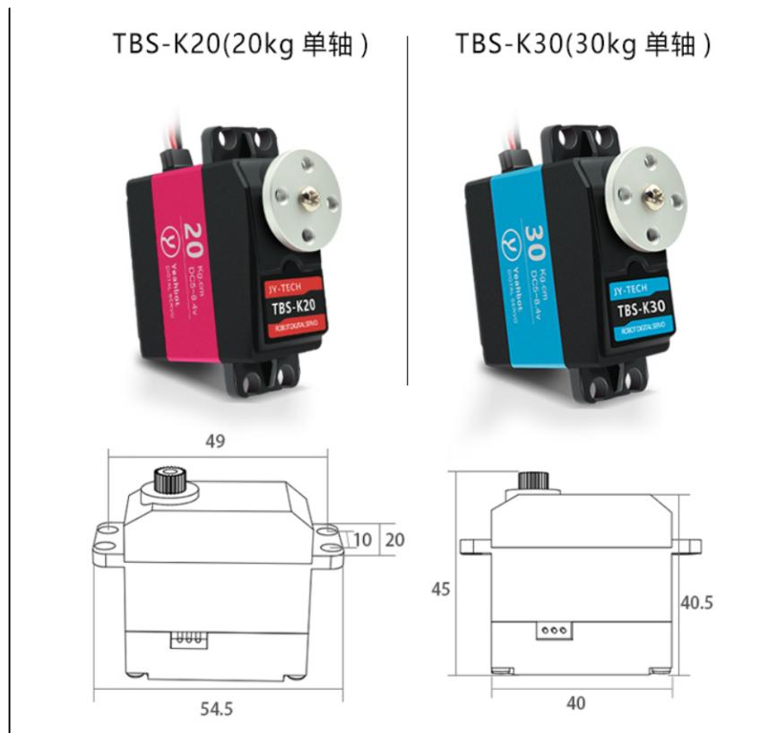
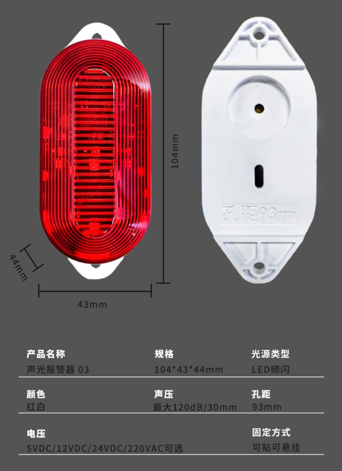
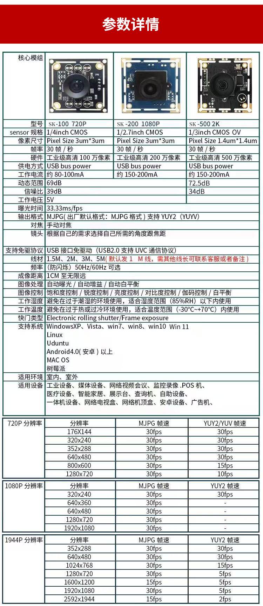
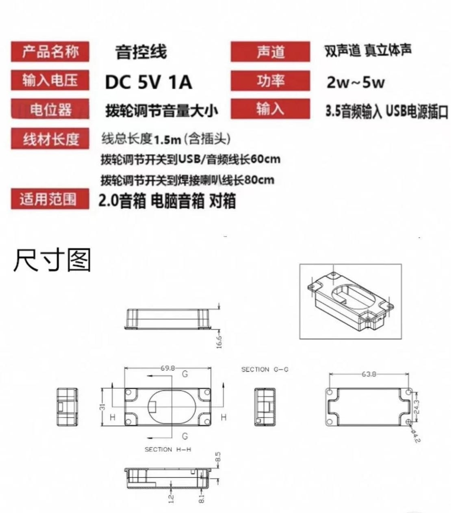

1. 舵机

控制方式： PWM 波控制
工作电压： 5-8.4V（文档标注3.3V，以实际参数为准）
型号规格： TBS-K20(20kg 单轴)、TBS-K30(30kg 单轴)
尺寸： 40*20*40.5mm（TBS-K20）
重量： 60g
扭力： 20kg.cm（TBS-K20）、30kg.cm（TBS-K30）（7.4V）
角度范围： 270°
精度： 0.3°
线长： 30cm
注意： 香橙派 GPIO 口电压为 3.3V，舵机工作电压为 5-8.4V，需注意电源匹配。
2. 继电器

引脚数量： 5个
工作电压： 3.3-5V
尺寸： 50*26*17mm
型号： JQC3F-05VDCC（1路继电器模块）
触发方式： 高/低电平触发（跳线选择）
负载能力： 10A 250VAC、10A 30VDC 等
接口定义： DC+（电源正极）、DC-（电源负极）、IN（控制端）、NO（常开）、COM（公用）、NC（常闭）
注意： 需根据香橙派 GPIO 电平选择触发方式（高/低电平），避免烧毁模块。
3. 声光报警器

工作电压： 3.3-5V（可选 12V/24V/220V）
尺寸： 104*43*44mm（型号03）、73*73*57mm（型号04）
声压： 最大120dB/30mm
光源类型： LED频闪（红白颜色）
固定方式： 可贴可悬挂
孔距： 93mm（型号03）、44mm（型号04）
4. 摄像头

接口类型： USB 2.0（免驱动，支持 UVC 协议）
分辨率： 1080P（SK-200）、720P（SK-100）、2K（SK-500）
帧率： 30帧/秒（MJPG格式）
工作电压： 5V（USB 总线供电）
工作电流： 约80-200mA
尺寸： 36*36*25mm
功能： 夜间模式、手动对焦、自动曝光/白平衡
支持系统： Windows、Linux、Android、Mac OS、树莓派（香橙派兼容）
注意： 需选择 1/4 英制支架（螺丝头），适合室内外使用，工作温度范围 -30°C~+70°C。
5. 语音报警器

输入电压： DC 5V 1A
输出功率： 2-5W（双声道立体声）
输入接口： 3.5mm AUX 音频输入
尺寸： 69.8*31*16.6mm
音量控制： 拨轮调节
线材长度： 总长度1.5m（含插头）
适用设备： 电脑音箱、2.0音箱、对箱等
6. 香橙派 40pin 接口参数
尺寸： 150*95*35mm
电源端： 2个3.3V、2个5V
GPIO 数量： 26个（8号、10号为调试串口，不可用）
GPIO 电压： 3.3V
特殊引脚： 27号、28号仅支持 I2C 功能，电压1.8V
支持功能： I2C（SDA/SCL）、SPI（SDO/SDI/SCLK/CS）、UART（UTXD/URXD）、PWM3
重要提醒： 所有 GPIO 口电压为 3.3V，请勿直接连接 5V 设备，避免主板烧毁；27/28号引脚电压1.8V，需注意设备匹配。